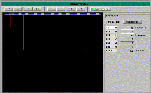

|
This screen is a graphical tool used to view and fine-tune shifters. The Display Graphical Shifter screen displays information for one shifter at a time. It can be used to quickly configure the tracking utility menus.
|
Click Here to See a full screen shot
of the Graphical Shifters Menu
 |
Lines connect the shifter points to the shifter index to show at what point they occur. On a running system, this screen also shows the cartons or totes as they are tracked to their destination. The cartons or totes are represented by boxes drawn on the shift index bar. The color of the box indicates its status.
| Box Color
|
Status
|
| Cyan | Inducted |
| White | Identified |
| Yellow | Diverted |
| Gray | Confirmed |
There are some tools that can be used for viewing and editing data from the Display Graphical Shifters screen:
To manipulate a test box - press the lower case 'i' key to force the first induct eye on or off.
Press the upper case 'I' key to clear the forced state of the first induct eye.
If there is a box in the induct eye, you can assign a destination lane of 0 through 9 by pressing a digit 0-9.
If you press 's' (or 'S'), the shifter will shift once.
Copyright © 2001 Fortna Inc. All rights reserved.